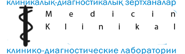
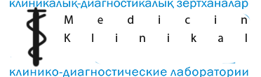

Восстановление функции поврежденных участков
Если часть тела получила повреждение (исключая жизненно важные области, такие как голова и грудная клетка), можно попробовать вернуть ей функциональность с помощью комплектов для первой помощи, таких как "Хирургического набор CMS" или "Полевой хирургический набор Surv12". Эти комплекты способны придать минимальную работоспособность поврежденному участку, однако для усиления результата рекомендуется дополнительно применять другие средства медицинской помощи. После использования такого комплекта, участок может функционировать на 25% до 45% (для CMS) или от 60% до 72% (для Surv12) от его изначальных возможностей. Но помните: дополнительные манипуляции могут снизить этот показатель еще больше.
Восстановление после травм
После получения травмы, важно правильно заботиться о своем здоровье. Даже без активного вмешательства, организм постепенно восстанавливается,
но процесс может быть ускорен с помощью медицинских средств и правильного ухода. В начале процесса ваше тело может пытаться самостоятельно восстановить до
456.6 единиц здоровья в час, а также восстанавливать уровень энергии и гидратации.
Для ускорения процесса восстановления рекомендуется применять медицинские
препараты и средства. Однако в случае серьезных травм лучше консультироваться с врачом.
В некоторых случаях, когда травма слишком серьезная или требует специализированного
ухода, рекомендуется обратиться к специалисту. Стоимость такой помощи будет варьироваться в зависимости от сложности и характера травмы, а также от квалификации врача.
Всегда следите за своим состоянием и при необходимости обращайтесь за медицинской помощью. Правильный уход и внимание к своему здоровью позволят вам быстрее вернуться к нормальной жизни."